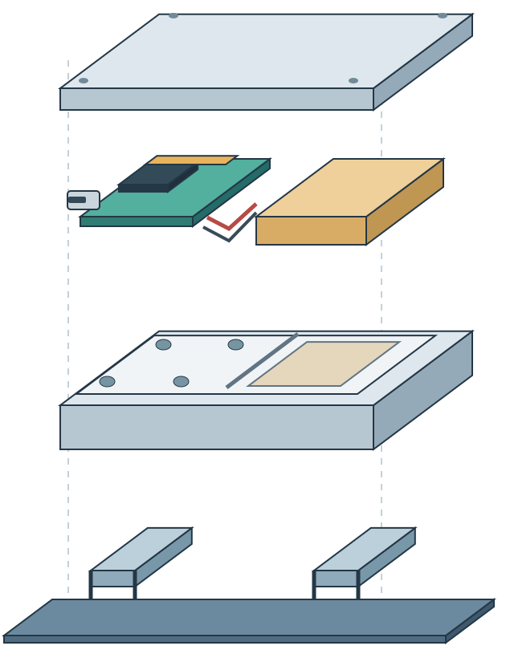

Our Model
79.42%Macro-F1
测试窗口 3,708测试犬只 9
移动、转身、停下。六个通道，把物理世界变成可观察的曲线。
把两秒 IMU 信号交给 AI，看动作如何变成行为概率。
轻量模型 · 七类行为
七类行为识别 · 按犬只独立评估
下一步，把采集板变成可佩戴的项圈，把行为信号延伸到呼吸与健康趋势。
组合 PCB、电池与保护壳，完成第一版可佩戴项圈。

装配概念图研究静息和睡眠时的呼吸信号，结合行为识别减少运动干扰。
融合行为与呼吸等生理信息，建立个体基线，探索疾病风险提示。
关注静息呼吸变化与心脏病相关异常。
探索短头犬的睡眠呼吸异常。
研究骨关节炎相关的活动与姿势变化。
识别抓挠、甩头等行为变化。
以上为研发方向，尚待临床验证。